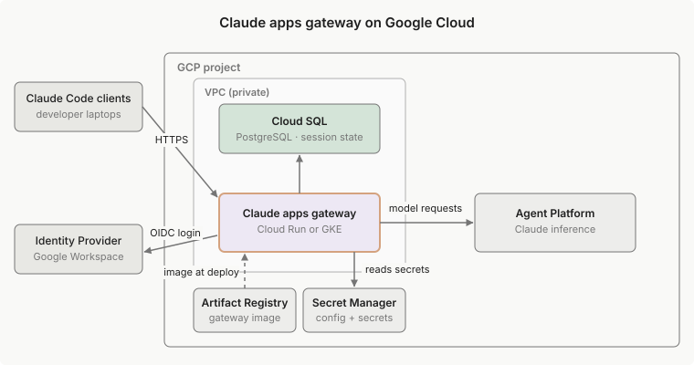

在 Google Cloud 上部署 Claude apps gateway
在 Google Cloud 上运行 Claude apps gateway 的实际示例：Cloud Run 或 GKE、Cloud SQL for PostgreSQL、Secret Manager 和 Google Cloud 的 Agent Platform 的服务账户身份验证。
本页介绍在 Google Cloud 上运行 Claude apps gateway 的一种方式。该配置是客户管理基础设施的工作示例，而不是受支持的生产部署；使用它来了解各个部分如何组合在一起，然后再根据您自己的环境进行调整。有关平台无关的要求，请参阅部署指南。
此示例在 Google Cloud 上配置 Claude apps gateway，使用 Google Cloud 的 Agent Platform 作为模型上游，使用 Cloud Run 或 GKE 进行计算。Google Workspace 是示例身份提供商 (IdP)，但任何符合 OpenID Connect (OIDC) 的 IdP 都可以工作；只有 oidc 块会改变。有关每个 IdP 的详细信息，请参阅身份提供商设置。
您将构建的内容

部署包括：
- Cloud Run 服务或 GKE Deployment 运行网关容器
- Artifact Registry 存储库用于网关镜像
- Cloud SQL for PostgreSQL 实例，仅限私有 IP，用于网关的存储
- Secret Manager 机密用于
gateway.yaml、JWT 签名密钥、OIDC 客户端机密和 Postgres URL - 服务账户，具有
roles/aiplatform.user，直接附加到 Cloud Run 或通过 Workload Identity 绑定到 GKE - HTTPS 前端，由您提供：Cloud Run 前面的内部应用负载均衡器，本演练为网关配置但不创建，或 GKE 上类别为
gce-internal的内部 GKE Ingress
前置条件
- 启用了计费的 GCP 项目，以及创建上述资源的权限
gcloudCLI，使用gcloud auth login进行身份验证，并在本地安装了 Docker- 对于 GKE 路径：
kubectl和在下面演练中创建的 VPC 上的 GKE 集群 - 在 Model Garden 中访问您需要的 Claude 模型，在发布这些模型的区域中
- Google Workspace OAuth 2.0 网络应用程序客户端，重定向 URI 为
https://<gateway-host>/oauth/callback；请参阅身份提供商设置 - 网关的 TLS 主机名，通常是指向负载均衡器的内部 DNS 名称
设置项目和区域一次：
export PROJECT_ID=<your-project>
export REGION=us-east5 # a region where the Claude models you need are published in Model Garden
gcloud config set project "$PROJECT_ID"
部署网关
以下步骤使用 gcloud 命令配置完整部署。
1. 启用 API
启用演练使用的服务 API：
gcloud services enable \
aiplatform.googleapis.com \
artifactregistry.googleapis.com \
sqladmin.googleapis.com \
secretmanager.googleapis.com \
iamcredentials.googleapis.com \
iam.googleapis.com \
compute.googleapis.com \
servicenetworking.googleapis.com \
run.googleapis.com \
container.googleapis.com
所需的 API 取决于部署路径：
compute和servicenetworking：私有 IP Cloud SQL 路径所需run：仅限 Cloud Runcontainer：仅限 GKE
2. 创建服务账户并授予 IAM
网关作为专用服务账户运行，有权调用 Google Cloud 的 Agent Platform。它通过 VPC 使用密码用户访问 Cloud SQL，因此不需要 Cloud SQL IAM 角色：
gcloud iam service-accounts create claude-gateway --display-name="Claude apps gateway"
SA="claude-gateway@${PROJECT_ID}.iam.gserviceaccount.com"
gcloud projects add-iam-policy-binding "$PROJECT_ID" \
--member="serviceAccount:${SA}" --role="roles/aiplatform.user" --condition=None
然后在 Model Garden 中为项目启用 Claude 模型；模型发布到特定区域，因此请检查每个模型卡。
3. 构建镜像并将其推送到 Artifact Registry
根据容器镜像要求构建镜像，使用 linux-x64 glibc 二进制文件，然后推送：
gcloud artifacts repositories create claude-gateway \
--repository-format=docker --location="$REGION"
gcloud auth configure-docker "${REGION}-docker.pkg.dev" --quiet
# Cloud Run 需要 linux/amd64。--provenance=false 避免 buildx OCI
# 镜像索引被 Cloud Run 拒绝。
docker build --platform=linux/amd64 --provenance=false \
-t "${REGION}-docker.pkg.dev/${PROJECT_ID}/claude-gateway/gateway:<version>" .
docker push "${REGION}-docker.pkg.dev/${PROJECT_ID}/claude-gateway/gateway:<version>"
4. 为 PostgreSQL 配置 Cloud SQL
通过私有服务访问在 VPC 上创建实例，使其没有公共 IP；这也满足强制执行 constraints/sql.restrictPublicIp 的项目：
VPC=cc-gateway-vpc
gcloud compute networks create "$VPC" --subnet-mode=custom
gcloud compute networks subnets create cc-gateway-subnet \
--network="$VPC" --region="$REGION" --range=10.0.0.0/24
# 私有服务访问：每个 VPC 一次
gcloud compute addresses create "google-managed-services-${VPC}" \
--global --purpose=VPC_PEERING --prefix-length=16 --network="$VPC"
gcloud services vpc-peerings connect \
--service=servicenetworking.googleapis.com \
--ranges="google-managed-services-${VPC}" --network="$VPC"
gcloud sql instances create claude-gateway-db \
--database-version=POSTGRES_16 --tier=db-g1-small --region="$REGION" \
--network="projects/${PROJECT_ID}/global/networks/${VPC}" --no-assign-ip
gcloud sql databases create claude_gateway --instance=claude-gateway-db
PGPASS="$(openssl rand -hex 24)"
gcloud sql users create gateway --instance=claude-gateway-db --password="$PGPASS"
PRIVATE_IP="$(gcloud sql instances describe claude-gateway-db \
--format='value(ipAddresses[0].ipAddress)')"
GATEWAY_POSTGRES_URL="postgres://gateway:${PGPASS}@${PRIVATE_IP}:5432/claude_gateway?sslmode=require"
Cloud Run 或 GKE 运行时必须在此 VPC 上或路由到此 VPC。
5. 编写 gateway.yaml
upstreams 块使用 auth: {} 指向 Google Cloud 的 Agent Platform，因此网关通过运行时服务账户的应用默认凭证进行身份验证。有关每个字段，请参阅配置参考。
两个 listen 字段描述网关的前端：
public_url：外部https://源，对于任何非环回绑定都是必需的；请参阅listen参考。网关仅从此值构建 IdPredirect_uri和其发现文档，从不从X-Forwarded-*标头构建。trusted_proxies：前端的源范围。网关仅在 TCP 对等体在此列表中时才遵守X-Forwarded-For，然后遍历链越过受信任的跳跃，因此按 IP 登录速率限制和审计事件记录开发者 IP 而不是负载均衡器的 IP。
设置 trusted_proxies 以匹配您的前端。类 gce 的外部 GKE Ingress 未列出：它配置一个公共转发规则地址，/login 私有网络检查拒绝该地址。
| 前端 | trusted_proxies |
|---|---|
| 直接访问的 Cloud Run，无负载均衡器 | [169.254.0.0/16] |
| Cloud Run 前面的内部应用负载均衡器 | 169.254.0.0/16 加上您的仅代理子网的 CIDR |
GKE 内部 Ingress，类 gce-internal |
您的仅代理子网的 CIDR |
下面的示例使用内部负载均衡器前置 Cloud Run 的值。
listen:
host: 0.0.0.0
port: 8080
public_url: https://claude-gateway.internal.example.com
trusted_proxies: [169.254.0.0/16, <your-proxy-only-subnet-cidr>]
oidc:
issuer: https://accounts.google.com
client_id: <your-oauth-client-id>
client_secret: ${OIDC_CLIENT_SECRET} # GKE: ${file:/secrets/oidc-client-secret}
allowed_email_domains: [example.com]
# Google 忽略 offline_access；这些产生刷新令牌：
scopes: [openid, profile, email]
extra_auth_params: { access_type: offline, prompt: consent }
session:
jwt_secret: ${GATEWAY_JWT_SECRET} # GKE: ${file:/secrets/jwt-secret}
store:
postgres_url: ${GATEWAY_POSTGRES_URL} # GKE: ${file:/secrets/postgres-url}
# readiness_grace_seconds: 300 # 在 Cloud SQL 故障转移期间
# 保持通过就绪探针
upstreams:
- provider: vertex
region: <your-region> # 必须匹配 $REGION
project_id: <your-project>
auth: {} # 通过运行时服务账户的 ADC
Google id_tokens 不包含 groups 声明。要在 managed.policies 中使用基于组的策略，以 Google Workspace 作为 IdP，请配置 oidc.google_groups，它使用具有域范围委派的服务账户通过 Admin SDK Directory API 查找每个用户的组。没有它，改为匹配 email_domain。
6. 在 Secret Manager 中存储密钥
创建四个密钥并向 claude-gateway 服务账户授予 roles/secretmanager.secretAccessor：
| 密钥 | 源 |
|---|---|
gateway-jwt-secret |
openssl rand -base64 32 |
gateway-oidc-client-secret |
Google Cloud 控制台 → OAuth 客户端 |
gateway-postgres-url |
Cloud SQL 步骤中的 $GATEWAY_POSTGRES_URL |
gateway-config |
上一步中的完整 gateway.yaml |
密钥到达容器的方式因路径而异：
- 在 GKE 上，它们通过 Secret Manager CSI 驱动程序作为文件挂载，
gateway.yaml引用${file:/secrets/...}。 - 在 Cloud Run 上，它无法将多个密钥挂载到一个目录中，
gateway.yaml作为文件挂载，其他三个作为环境变量注入，因此gateway.yaml改为引用${GATEWAY_JWT_SECRET}、${OIDC_CLIENT_SECRET}和${GATEWAY_POSTGRES_URL}。
7. 部署
[tab] Cloud Run
下面的命令在内部负载均衡器后面部署用于生产。
bash theme={null} gcloud run deploy claude-gateway \ --image="${REGION}-docker.pkg.dev/${PROJECT_ID}/claude-gateway/gateway:<version>" \ --region="$REGION" \ --service-account="claude-gateway@${PROJECT_ID}.iam.gserviceaccount.com" \ --min-instances=1 \ --max-instances=8 \ --timeout=3600 \ --ingress=internal \ --network="$VPC" --subnet=cc-gateway-subnet --vpc-egress=private-ranges-only \ --set-secrets=/etc/claude/gateway.yaml=gateway-config:latest,GATEWAY_JWT_SECRET=gateway-jwt-secret:latest,OIDC_CLIENT_SECRET=gateway-oidc-client-secret:latest,GATEWAY_POSTGRES_URL=gateway-postgres-url:latest \ --no-invoker-iam-check直接 VPC 出口，通过
--network、--subnet和--vpc-egress=private-ranges-only，让服务直接到达 Cloud SQL 私有 IP。到 Google Cloud 的 Agent Platform 端点和accounts.google.com的公共出口直接进入互联网，而不是通过 VPC，因此不需要 Cloud NAT。[!NOTE]
每个实例最多持有
store.max_connections个 Postgres 连接，默认为 5 个。请参阅调整连接池大小，根据数据库为网关剩余的连接数检查--max-instances=8，并将滚动更新启动的额外实例计算在内。调用者 IAM 检查必须打开或禁用。网关运行自己的 OIDC，其客户端不携带 GCP 令牌，因此 Cloud Run 的调用者检查必须允许未经身份验证的请求。网关的 OIDC 登录在请求到达容器后对其进行身份验证，
allowed_email_domains限制哪些域可以登录。两个标志允许未经身份验证的请求：
--no-invoker-iam-check：禁用检查，无需管理allUsers绑定，并在域受限共享下工作--allow-unauthenticated：向allUsers授予run.invoker角色；如果您的组织不允许--no-invoker-iam-check，请使用它通过
--ingress的入口限制是与调用者检查分离的独立层；保持设置以将服务限制在您的公司网络。默认情况下，Cloud Run
*.run.appURL 解析为公共地址，/login私有网络检查拒绝该地址。两种拓扑为开发者提供私有可解析的主机名，Cloud Run 都不为您配置：
- 内部应用负载均衡器，此页面的
gateway.yaml假设的拓扑：在服务前面配置一个内部应用负载均衡器，具有内部 DNS 名称和证书，并将listen.public_url设置为该主机名。internal入口设置已允许来自内部应用负载均衡器的流量；internal-and-cloud-load-balancing还允许外部应用负载均衡器，其公共地址/login私有网络检查拒绝，因此此页面上的任何拓扑都不需要它。- 仅内部入口，无负载均衡器：保持部署命令不变，将
listen.public_url保留为*.run.appURL，下面参考资产中的默认值。为了让*.run.app私有解析，您的网络团队必须已经运行 Google API 的私有服务连接端点、将*.run.app解析到它的 Cloud DNS 私有区域，以及到该端点的本地路由。Google 的 Cloud Run 私有网络指南涵盖了两个选项都需要的基础设施。一旦网关在私有主机名上提供服务，验证登录；在此之前，从 Cloud Run 中的日志确认容器已启动。
在首次登录前更新 OAuth 客户端的授权重定向 URI 为
<public_url>/oauth/callback。更改public_url后重新部署，因为网关仅从该设置构建其公共源，忽略X-Forwarded-Host和X-Forwarded-Proto。仅当设置listen.trusted_proxies时，才会为客户端 IP 遵守X-Forwarded-For。[tab] GKE
集群必须在 Cloud SQL 步骤中创建的
$VPC上，以便 Pod 可以到达数据库的私有 IP；仅 VPC 对等不起作用，因为 Cloud SQL 私有 IP 本身是对等网络，对等是非传递的。要在该 VPC 上创建新集群，请将--network="$VPC" --subnetwork=cc-gateway-subnet传递给gcloud container clusters create。在集群及其节点池上启用 Workload Identity，然后将 Google 服务账户绑定到 Kubernetes 服务账户，以便 Pod 继承其凭证：
```bash theme={null}
gcloud container clusters update--region="$REGION" \
--workload-pool="${PROJECT_ID}.svc.id.goog"在标准集群上，现有节点池也需要 GKE_METADATA；
Autopilot 默认启用此功能。
gcloud container node-pools update
--cluster= \
--region="$REGION" --workload-metadata=GKE_METADATAkubectl create namespace claude-gateway
kubectl create serviceaccount gateway -n claude-gatewaygcloud iam service-accounts add-iam-policy-binding \
"claude-gateway@${PROJECT_ID}.iam.gserviceaccount.com" \
--role roles/iam.workloadIdentityUser \
--member "serviceAccount:${PROJECT_ID}.svc.id.goog[claude-gateway/gateway]"kubectl annotate serviceaccount gateway -n claude-gateway \
iam.gke.io/gcp-service-account="claude-gateway@${PROJECT_ID}.iam.gserviceaccount.com"
```将网关部署为标准 Deployment 加上 Service 和内部 Ingress，类
gce-internal，如 Kubernetes 部署中所述，具有：
serviceAccountName: gateway- Secret Manager CSI 驱动程序在
/secrets处挂载密钥- 就绪探针指向
GET /readyz将具有提高的
timeoutSec的 BackendConfig 附加到网关 Service：GKE Ingress 后面的负载均衡器后端服务默认为 30 秒超时，这会切断长流式响应。不要在 Workload Identity 集群上应用阻止
169.254.169.254的出口 NetworkPolicy；Pod 必须到达元数据服务器以获取凭证。网关的内置 SSRF 防护是那里的防御。网关记录一个启动警告，指出元数据端点可达，并建议应用出口 NetworkPolicy。在 Workload Identity 下，该警告是预期的，因为 Pod 需要端点。
8. 将网关 URL 推送到开发者机器
网关现在正在运行，但开发者在网关 URL 在其机器上之前无法从 /login 到达它。通过 MDM 将完整的托管设置片段部署到每个设备，具有 forceLoginMethod、forceLoginGatewayUrl 和 parentSettingsBehavior: "merge" 选择加入。登录选择器中没有网关选项供开发者手动选择。
Terraform 参考
参考部署资产自动化本页的 Cloud Run 路径；配置和镜像资产适用于两条路径：
setup.sh：一个幂等的gcloud配置程序，遍历完整的 Cloud Run 路径，从启用 API 到第一次部署terraform/：相同的部署作为基础设施即代码，用于绿地部署：创建 Artifact Registry 存储库的目标应用，然后构建和推送镜像，然后完整应用gateway.yaml.example和用于 distroless 运行时镜像的Dockerfile
工件默认 Cloud Run 入口为 internal，与本页的部署命令相匹配；该设置适用于服务前面有或没有内部应用负载均衡器的情况，工件也不创建负载均衡器。工件还默认调用者层为 allUsers run.invoker 授予而不是 --no-invoker-iam-check，与本页演练相反；两者都有效，选择取决于您的组织的策略约束。
资产作为工作示例提供，而不是受支持的生产工件；查看并根据您的环境调整它们。
故障排除
有关网关启动和登录错误，请参阅平台无关的故障排除表。下面的条目特定于 Google Cloud。
| 症状 | 原因 | 修复 |
|---|---|---|
Cloud Run 在到达容器前返回 403 Forbidden |
调用者 IAM 检查仍然启用 | 使用 --no-invoker-iam-check 部署，或使用 --allow-unauthenticated 授予 allUsers run.invoker 角色 |
--no-invoker-iam-check 被拒绝，显示 invoker_iam_disabled is not currently available |
被 constraints/run.managed.requireInvokerIam 阻止 |
使用 --allow-unauthenticated。如果通过 constraints/iam.allowedPolicyMemberDomains 的域受限共享也阻止了它，请使用 GKE 路径，它在网络层公开网关，无需 allUsers 绑定。 |
部署时 Container manifest type … must support amd64/linux |
镜像在非 amd64 主机上构建，或 buildx 发出了 OCI 镜像索引 | 使用 --platform=linux/amd64 --provenance=false 构建 |
| 网关启动在 Cloud Run 上以 Postgres 连接超时错误退出 | 服务未附加到 VPC，或 Cloud SQL 在该 VPC 上没有私有 IP | 使用 --network 和 --subnet 部署以进行直接 VPC 出口，并使用 --no-assign-ip 和 --network 指向同一 VPC 创建 Cloud SQL 实例 |
Google Cloud 的 Agent Platform 请求返回 403 PERMISSION_DENIED |
运行时未使用 claude-gateway 服务账户，或模型未在 Model Garden 中为项目启用 |
在 Cloud Run 上设置 --service-account 或在 GKE 上绑定 Workload Identity，并在 Model Garden 中为目标区域启用每个 Claude 模型 |
| 流式响应在固定持续时间后切断 | 前端请求超时：GKE Ingress 后面的负载均衡器后端服务默认为 30 秒，Cloud Run 默认为 300 秒 | 在 GKE 上附加具有提高的 timeoutSec 的 BackendConfig，或在 Cloud Run 上使用 --timeout=3600 部署 |
后续步骤
- 配置参考：每个
gateway.yaml选项，包括managed.policies和telemetry - 部署和操作：IdP 设置、健康检查、JWT 密钥轮换、升级和安全模型
- Claude apps gateway 概述：快速入门和连接开发人员